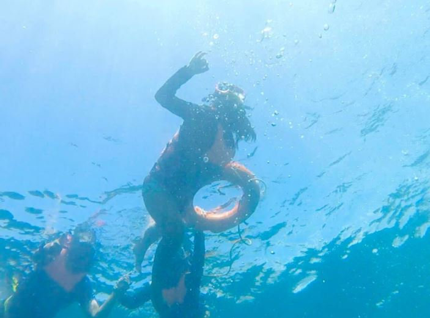

I am 13 yrs old. I was born on March 5, 2008 in Cabanatuan City, Nueva Ecija.
I love to travel with my family. I have been to many places, and I treasure all the moments with them.

"By discovering nature, you discover yourself". - Maxime Lagacé
"Adopt the pace of nature. Her secret is patience". - Ralph Waldo Emerson